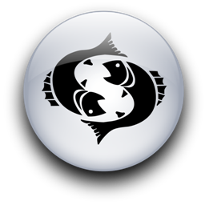
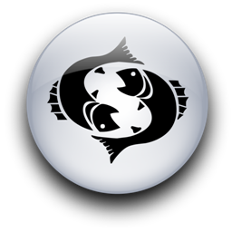

Женщина Рыбы и Мужчина Козерог
-

 

Не у всех мужчин-Козерогов такое твердое мнение по поводу работы их жен. Существует множество Козерогов, которые считают, что для их женщин просто превосходно быть занятыми и иметь высокооплачиваемую работу.
Однако справедливо будет заметить, что почти все Козероги-мужчины, которые соглашаются с тем, чтобы их жены работали, делают это неохотно, потому что в глубине души осознают, что не за горами то время, когда необходимость в этом отпадет. Конечно, как и всегда, здесь есть исключения, но мало кто из мужчин-Козерогов истинно счастлив при мысли о работе или карьере своих жен.
Женщина-Рыбы будет негодовать по поводу того, как к ней относится ее Козерог, меньше, чем какой-либо другой знак Зодиака. Она достаточно терпелива и чувствительна, чтобы понять, что те самые инстинкты, которые создают его непреклонность, порождают и те качества, которые привлекают ее: умение защитить и надежность, доброта, неизменная верность и преданность тем, кого он любит. Его стабильность успокаивает ее беспокойных дух. Его уверенность смягчает ее собственные сомнения. Ее трогают его учтивые манеры и то одиночество, которое угадывается в нем. Она видит за стеной его внешней уверенности печаль и неутоленные желания, которые он пытается скрыть. Ведомая Нептуном женщина может прекрасно чувствовать, что только щедрое сердце могло бы разрешить этому человеку поставить перед собой такие труднодостижимые цели, только очень большая сила и решимость будут вести его к совершенству, которого он хочет достичь. Его периоды депрессии и молчания не беспокоят ее так, как других женщин. Это увеличивает ее любовь к нему, заставляет ее учиться выводить его из грустного настроения мягкостью взгляда, тонким восприятием его сатурновской натуры и явным уважением к его достоинствам (что почти всегда приветствуется и мужчинами других знаков).
Любовь женщины-Рыб полна милости и глубокой мудрости. Спустя некоторое время она даже изменит его, правда, очень постепенно, и он поймет, что может смягчить те суровые правила, которыми руководствуется. К тому времени он уже вступит в тот характерный для Козерогов период, когда они начинают молодеть. Ему захочется путешествовать с ней, быть более беспечным и небрежным, найти время, чтобы понюхать цветы и погоняться за ветром, сделать так, чтобы в его жизнь заглянула жажда приключений и новых горизонтов. Козероги умеют быть совершенно очаровательными и радуются, когда Сатурн ослабляет их дисциплину. Они становятся поистине самими собой, когда вырываются из привычных рамок поведения, которые сами себе создали.
Как и во всех сочетаниях стихий Земли и Воды, физическая любовь между женщиной-Рыбами и мужчиной-Козерогом может стать для обоих глубоким и обогащающим ощущением. Так или иначе, Козерог чувствует себя обновленным после интимных отношений со своей любимой Рыбкой, которой он научился доверять. Это внезапное ощущение счастья после близости с ней, этот особый блеск в его глазах - как будто он только что вновь открыл, что такое наслаждение и невинность, не отягощенные беспокойством и чувством вины... Она тоже счастлива, потому что для женщины-Рыб счастье измеряется тем, сколько его она может дать другим. Молчание - почти всегда основа близости Рыб и Козерога, красноречивое молчание, которое идет от взаимопонимания и глубины чувств.
Иногда молчание между ними может превращаться временами в холодность и отсутствие интереса. Если это происходит, значит, они поставили физическое влечение выше ее романтических нужд, или она отказалась достаточно интенсивно отвечать на призыв его более земной натуры. Но если эти двое возлюбленных попытаются, испытывая влияние дружбы и легкости в общении, они придут к более полному пониманию различных нужд друг друга.
Той областью, в которой чаще всего возникает напряжение в отношениях между женщиной-Рыбами и мужчиной-Козерогом, любовниками или друзьями, может стать ее склонность к сентиментальности. Он может считать ее слишком неуловимой, скрытной и ранимой. Это может сделать его нервным, он будет бояться быть самим собой, чтобы не обидеть ее чувств. Им придется решать эти проблемы сразу, не давая им вырасти в непреодолимое препятствие.
Козерог, который любит женщину знака Рыб, легко может сбить с толку ее мягкая женственность. Есть также много другого, что ему стоило бы знать об этой женщине. С одной стороны, она принадлежит стихии Воды, и это означает, что она способна преодолеть решимость Козерога, но не требованиями, а невидимым давлением, постоянным убеждением и подспудным внушением. Вода - самый упругий из всех элементов, который в конечном счете преодолевает любое сопротивление. Она также может быть капризной и раздражительной, хотя редко или никогда - агрессивной. Ему будет не так-то просто принудить ее прямо ответить на вопрос, когда он захочет узнать, что она на самом деле думает и чувствует. Тактика уклончивости доведена людьми, которыми правит Нептун, до уровня искусства, поскольку это один из способов защиты от вторжения в их собственные владения.
Но все это лишь проходящие мимо облака, а не постоянная темнота. Ссоры между этими мужчиной и женщиной всегда могут закончиться радугой примирения.